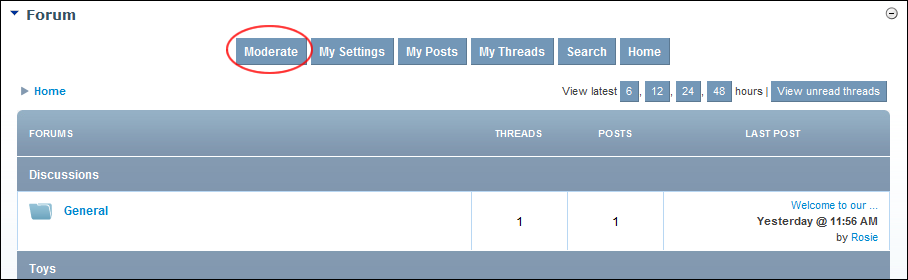

Viewing Reported Users
How to view the profile of users who are been reported on the Forum module.
- Select Moderate from the module actions menu - OR - Click the Moderate link. This opens the Moderator Control Panel.

- In the left-hand panel, select Users > Reported. This displays a summary list of reported users.
- In the User column, click on a user name link to view the users profile.